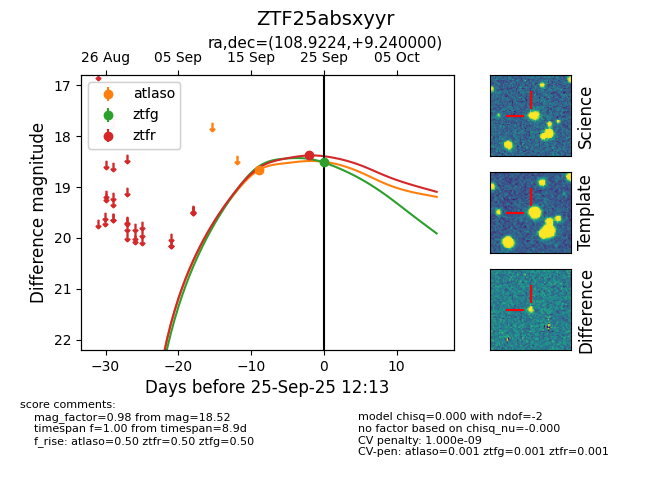
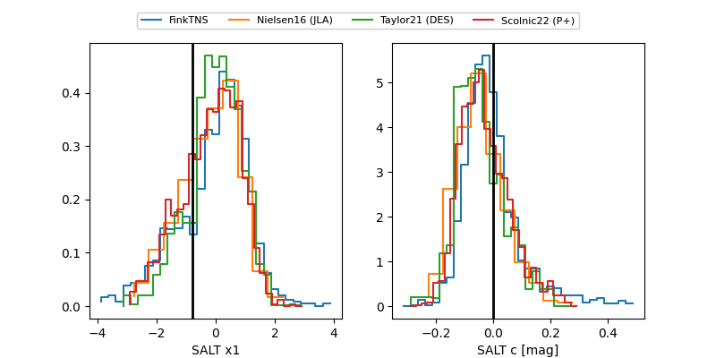

FINK: ZTF25absxyyr
Lasair: ZTF25absxyyr
ALeRCE: ZTF25absxyyr
ZTF25absxyyr (ztf,fink)
equatorial (ra, dec) = (108.9224,+9.24000)
galactic (l, b) = (207.3821,+9.55530)


last atlaso=18.66, ztfg=18.52, ztfr=18.38
1 atlaso, 1 ztfg, 1 ztfr detections